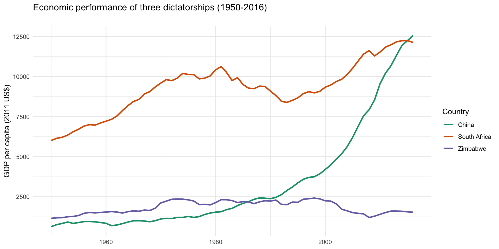
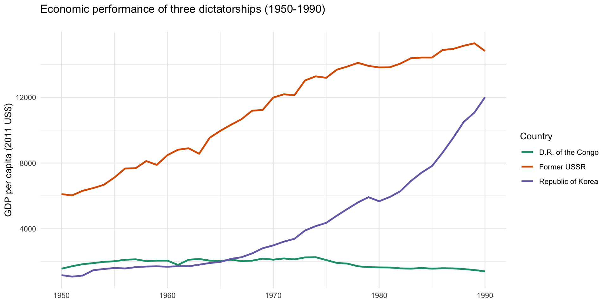
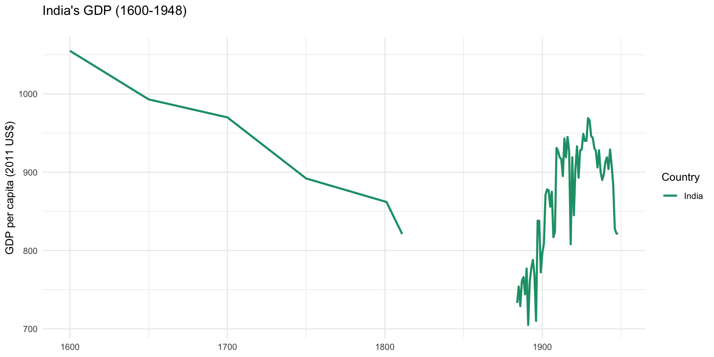

Lecture 2.1
Institutions and Development
Institutions
What is an Institution?
“Humanly devised constraints that structure political, economic and social interaction. They consist of both informal constraints (sanctions, taboos, customs, traditions and codes of conduct), and formal rules (constitutions, laws, property rights).”
- Douglas North
Inclusive Institutions
- Inclusive institutions…“allow and encourage participation by the great mass of people in economic activities that make the best use of their talents and skills and enable individuals to make the choices they wish.”
- Economic: private property, unbiased legal system, banks, legally binding contracts, etc.
- Political: can take a variety of forms but must be pluralistic (constrained) with centralized and powerful state
Extractive Institutions
- Extractive institutions are…“designed to extract incomes and wealth from one subset of society to benefit a different subset.”
- Economic: limited or non-existent property rights, biased legal system, slavery
- Political: absolutist, repressive, may or may not be centralized
Key Arguments
Hypothesis 1: Inclusive economic institutions promote investment and economic growth, while extractive institutions discourage investment and hamper economic growth
Hypothesis 2: Inclusive political institutions encourage the development of inclusive economic institutions and vice-versa
Additional Considerations
Distribution of Authority

- Institutional change/progress depends on distributed authority
- Pulls power away from monarch/dictator
- Broad coalitions counter narrow interests
Persistence and Change
- Why do extractive institutions persist?
- Industrial progress threatens the interests of dictators and other elites
- Polany’s “double movement”
- Schumpeter’s theory of “creative destruction”
- When do institutions change?
- Critical junctures (and small differences)
- e.g. disease \(\rightarrow\) shift in labor market dynamics
- Revolution gives a group new power
- A&R give the example of bubonic plague leading to shift in labor market dynamics
- Maybe something similar is going on with COVID?
- Revolution leads to assertion of power for one class or another
- Glorious Revolution lead to permanent assertion of power of parliament over the crown
- French revolution led to greater power for lower classes, established constitution that limited power of the monarchy
- Other examples?
Reversal of Fortunes
- Extractive institutions make a region wealthy in one period, but poor in the next
- Examples?
slavery; the encomienda system (forced labor); child labor
Comparisons and Cases
North Korea vs. South Korea

The United States vs. Mexico

Other Cases

Zimbabwe, South Africa & China

Discuss in this order: Zimbabwe, South Africa and China Use China to transition to growth under dictatorship
If things are going fast, do small groups; have each choose on case for discussion.
Growth Under Dictators
Some Famous Dictators


All three are dictators; did their countries grow at the same rate under their leadership?
Growth Under Famous Dictators

How do we explain variation in growth rates under repressive regimes?
DRC is purely extractive; USSR directs resources towards productive sectors; while South Korea (and China) adopt inclusive political institutions
Growth Under Repressive Regimes
- Growth under extractive institutions is possible
- When elite funnel resources to high productivity areas
- When authoritarian regimes permit inclusive economic institutions
- But this growth is inherently limited
- Lack of incentives for innovation and production
- Resistance to creative destruction
- Infighting among the elite
Remaining Challenges
The United States

Wood carving is by Van Ingen & Snyder from a book titled The Suppressed Book About Slavery! published by G.W. Carleton and Co. in 1864.
The United Kingdom

Economic Impact of Colonialism

- India’s fortunes as a global power declined under the British
- India had the world’s leading economy until the 18th century
- India’s share of the global economy feel from 24% of global GDP to around 4% when the British left
- India saw a decline under the British until the middle of the 19th century, at which point it began to grow again, but the growth was uneven and steady upward growth only resumed after the British left
- India’s economy stagnated because the British extracted raw materials and sold finished products (mainly textiles and garments) back to India as a captive market
- The British eenacted laws that prevented Indian industry from competing with British imports, killing India’s textile sector, which it had a huge comparative advantage in before the British arrived
- There are some caveats:
- Although its GDP was lower, India grew at a faster pace under the British than under the Mughals
- Mughals were also pretty brutal as far as rulers go and hoarded most of India’s wealth
- The Mughal empire was already on the decline when the British came
- However the fact remains that the British adoped and heavily relied upon extractive institutions to transfer wealth back to Britain
Endogeneity
- A relationship is “endogenous” when the direction of causality is unclear
- A&R hypothesize that inclusive institutions drive development
- But could inclusive institutions be the result of development?
- Or could there be a third factor driving both?
- What are some possibilities?
Exercise
- Write two or three sentences on what you found convincing about A&R’s theory
- Write two or three sentences on what you found problematic
- Discuss with a neighbor